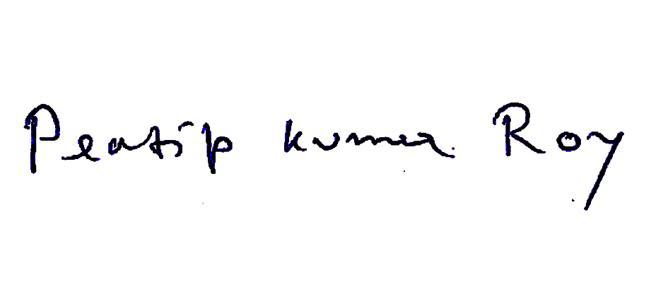

Curriculam Vitae
Name : Pratip Kumar Roy
Address : B/8/32, Bankola Area Complex,
Post-Ukhra, District- Paschim Bardhaman,
West Bengal, Pin-713363
Mobile No : 7797503206
E-mail : pratipkumarroy@gmail.com
Objective :- A Computer Science engineer seeking for an opportunity
to work for an esteemed organization.
Acedemic Qualifications :-
| Degree / Certificate |
Degree |
Discipline |
Institute |
Board/ University |
Year Of Passing |
Aggregate % / CGPA |
| Graduation |
Btech |
Computer Science & Engineering |
Asansol Engineering College |
MAKAUT |
2016 |
6.96 |
| 12th |
Heigher Secondary |
Science(PCM) |
GTBPS, Durgapur |
CBSE |
2012 |
64.16 |
| 10th |
Secondary |
Science(PCM) |
A.G.Church, Ukhra |
ICSE |
2010 |
75.57 |
Projects Undertaken :-
| Number |
Name of Institute / Organization |
Project Title |
Duration |
| 01. |
Kodnest, Bangalore |
Responsive Curriculum Vitae(CV) |
21st April 2021 TO 30th April 2021 |
| 02. |
Kodnest, Bangalore |
Banking Services Project |
01st May 2021 TO 08th May 2021 |
| 03. |
Kodnest, Bangalore |
Simple Calculator |
01st June 2021 TO 08th June 2021 |
Responsive Curriculum Vitae(CV) :- Responsive curriculum Vitae is an html,
css made, responsive CV,which is completely made using html and css.And it is responsive,
i.e, it can be opened through any computer or media devices.
Banking Services Project :- Banking Services is an html, css, javascript made
Form Validation Project which makes use of form validation, animations and much more.
The first page this project accepts inputs and performs form validation. On successful validation,
it moves to the next page and so on. It is a 4 page interactive project, which is made using
various properties of HTML, CSS and Javascript.
Simple Calculator :- This is a very simple two input calculator made with Django.
It takes two inputs from the user and does various mathematical operations.
Computer Technologies :-
- Java
- Python
- Django
- HTML 5
- CSS
- Javascript
- SQL
- Manual Testing
- Selenium
Personal Details:-
Date of Birth :- 13th October 1993
Gender :- MALE
Languages Known :-
ENGLISH (Read, Write & Speak)
BENGALI (Read, Write & Speak)
HINDI(Read, Write & Speak)
Family Details :-
| Details |
Name |
Occupation |
| Father |
Sadhan Kumar Roy |
Govt Service |
| Mother |
Sikha Roy |
Retired |
Personnel skills :-
- Hardworking - I am hardworking and eager to learn new things.
I remain very passionate about my work and I do everything with interest.
- Punctual - My time management skills are very good and
I tend to do everything on time.
- Adaptability - I possess the ability to cope with the changing environment.
I am very much adaptive to stress and changing environment.
Hobbies :- Bike riding and cooking are some of my leisure time interests.
Extracurricular activities :- Cricket, Chess.
Declaration :-
I, Pratip Kumar Roy, hereby declare that all the information given
by me in this CV is correct, true and valid.
I will present the required and supporting documents as and when required.

Signature